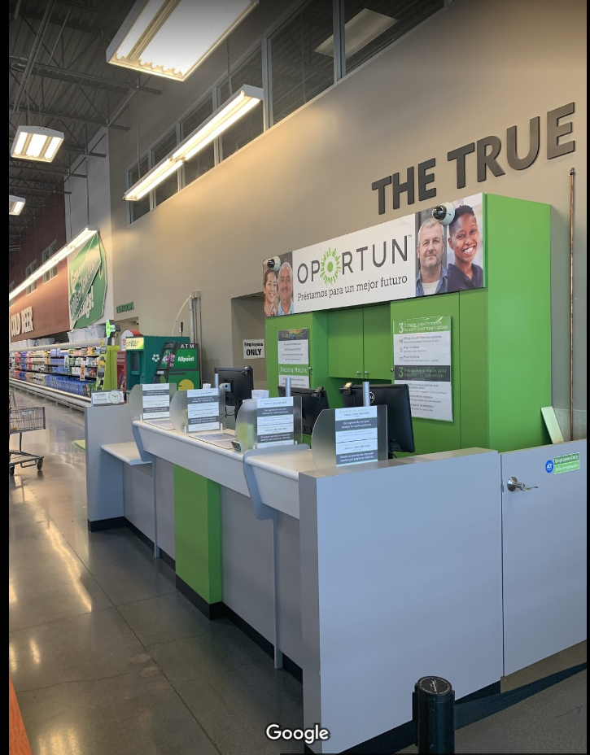
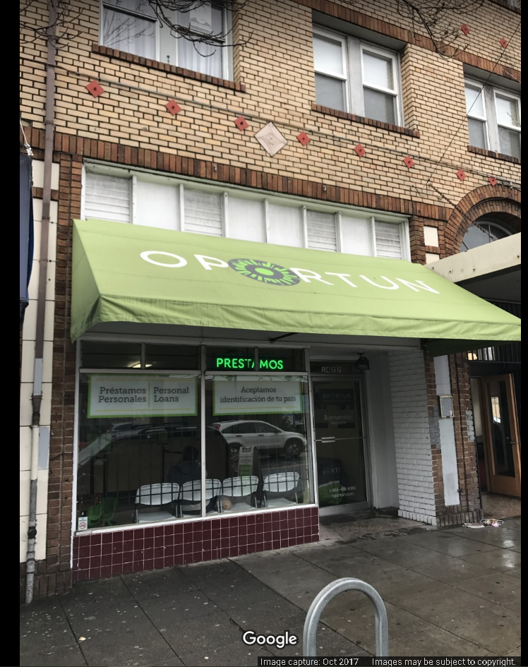
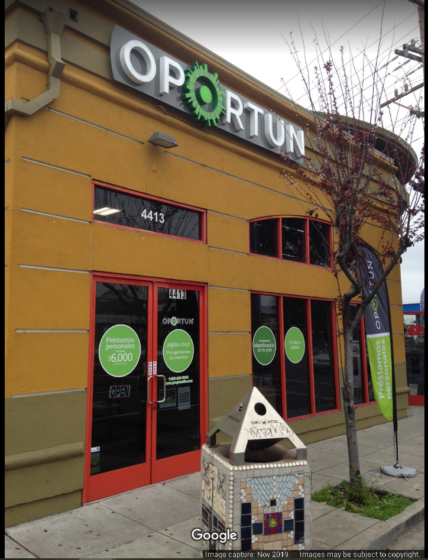

The first Oportun visual in the comparison set, highlighting the initial experience state and the details users need to understand first.
Reframing a customer experience so important decisions, location context, and next steps are easier to understand at a glance.
This page now follows the same comparison-led case-study format as Caribou, with two visual slots ready for the images you will provide next.
The first Oportun visual in the comparison set, highlighting the initial experience state and the details users need to understand first.

The second Oportun visual in the comparison set, showing how the experience continues and how the information hierarchy evolves.
This case study centers on an Oportun experience where users need to quickly understand what is available, what matters, and what action to take next.
Financial-services interactions carry extra trust and clarity requirements. If the page asks users to work too hard to interpret information, the experience can feel heavier than it needs to.
The redesigned case-study structure leads with visual comparison, then uses short narrative sections to explain the customer need, product intent, and design choices behind the work.
Instead of a generic hero and gallery, the page now frames the work around a focused pair of visuals, a clear project snapshot, and supporting details that can be updated as final assets and metrics are added.
The page now explains the project through a direct comparison instead of a broad gallery.
Context, challenge, approach, and change are separated into sections that are easier to scan.
The two main visual cards are prepared for the images and captions that will complete the case study.
This research effort examined how Oportun locations appeared in real-world map contexts. Each view is treated as equal evidence from the same study, helping frame patterns around visibility, surrounding context, and customer discovery.



The research focused on how Oportun locations show up in everyday search and map contexts, where customers may be evaluating convenience, proximity, and credibility before deciding whether to visit.
Looking across three location examples made it easier to compare environmental cues without treating any single branch as the main story. The outcome is a clearer picture of how visibility, surrounding businesses, and map presentation can shape customer expectations.